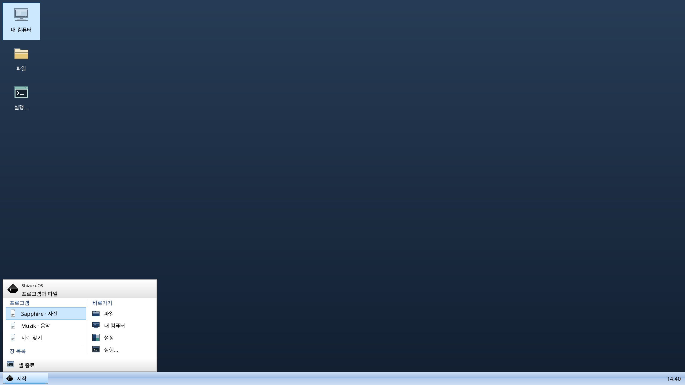

당신의 분위기로.
유리 같은 깊이감의 Slade를 기본 테마로. 정돈된 Flute, 실험적인 Jade와 사용자 정의 테마를 준비합니다. 소리와 커서까지 하나의 경험으로 연결합니다.
독립 운영체제 · 개발 중
내 언어로 쓰는 데스크톱, 취향을 담는 테마.
자체 한국어 셸과 ShizukuOS Core를 중심으로
독립 운영체제를 만들고 있습니다.
개발 소스와 사용자·개발 문서를 공개합니다.
새 Pre-Beta 01 ISO는 실제 설치·재부팅 검증을 진행 중입니다.
실제 ShizukuOS · 설치 후 UEFI 부팅 · 2026.10.05

ISO 없이 UEFI 부팅하고 실제 파일 목록과 정상 종료를 확인했습니다. 새 설치기·계정·확장 기능은 별도 통합 검증 중입니다.
실행 범위와 현재 상태 보기 ↗확인된 설치 후 실행 기록입니다. 새 설치기·첫 부팅 계정·설정·탐색기 확장의 검증 상태는 문서에 구분합니다.
ShizukuOS가 향하는 곳
부팅 화면을 넘어, 매일 쓸 수 있는 하나의 OS를 만듭니다. 아래는 개발 목표이며 전체 기능 검증은 아직 진행 중입니다.
구조와 개발 목표 살펴보기유리 같은 깊이감의 Slade를 기본 테마로. 정돈된 Flute, 실험적인 Jade와 사용자 정의 테마를 준비합니다. 소리와 커서까지 하나의 경험으로 연결합니다.
Terrasphere로 웹을, Muzik으로 음악과 영상을. Sapphire의 이미지와 Folio의 문서까지 네이티브 앱으로 연결하는 것이 목표입니다.
ShizukuOS Core 위에 드라이버, 네이티브 실행 환경, Linux Subsystem과 ShizukuVM을 연결합니다. Windows 10 x86/x64 API 호환도 개발 목표입니다.
지금 받을 수 있어요
공개된 GOP 드라이버와 Notepad++ 호환 구성, 해당 소스와 설치 안내를 한 번에 받으세요. 과거 호환 환경용 구성요소이며 OS 설치판이나 앱 원본은 포함하지 않습니다.
다운로드ShizukuOS의 자체 설치·부팅·드라이버 검증을 진행하고 있습니다. 검증을 마친 ISO는 이 공식 사이트에서 공개합니다. 최종 1.0.0도 아직 완성되지 않았습니다.